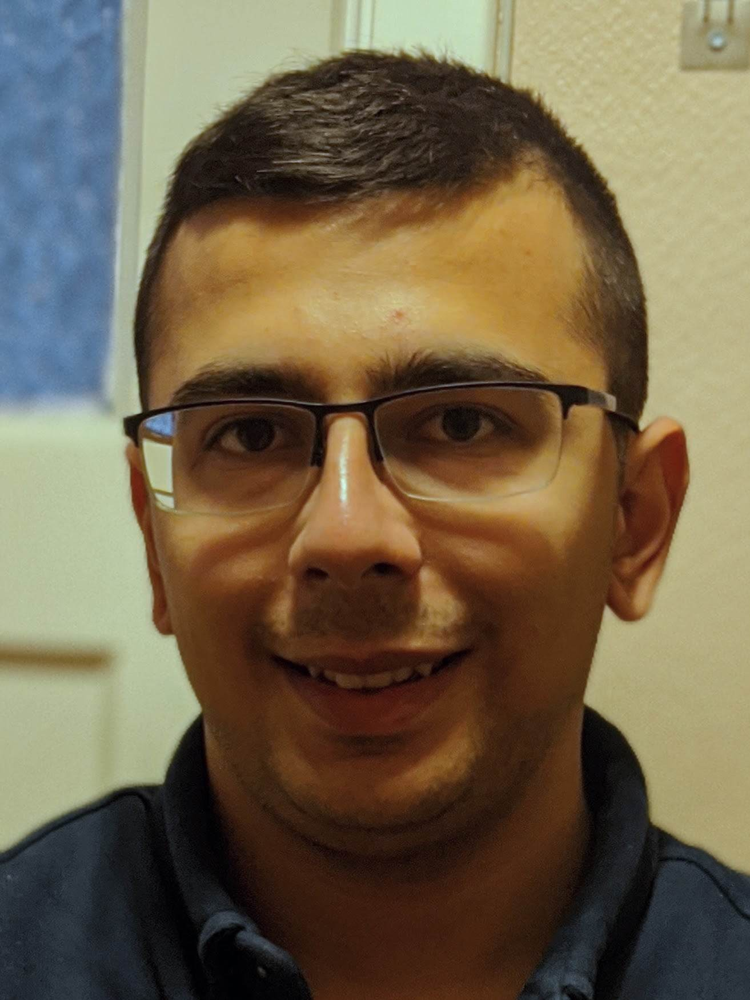
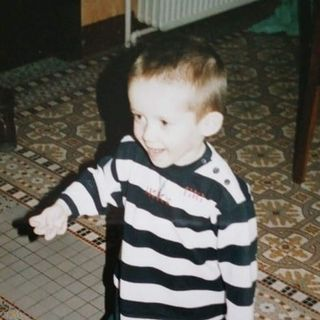
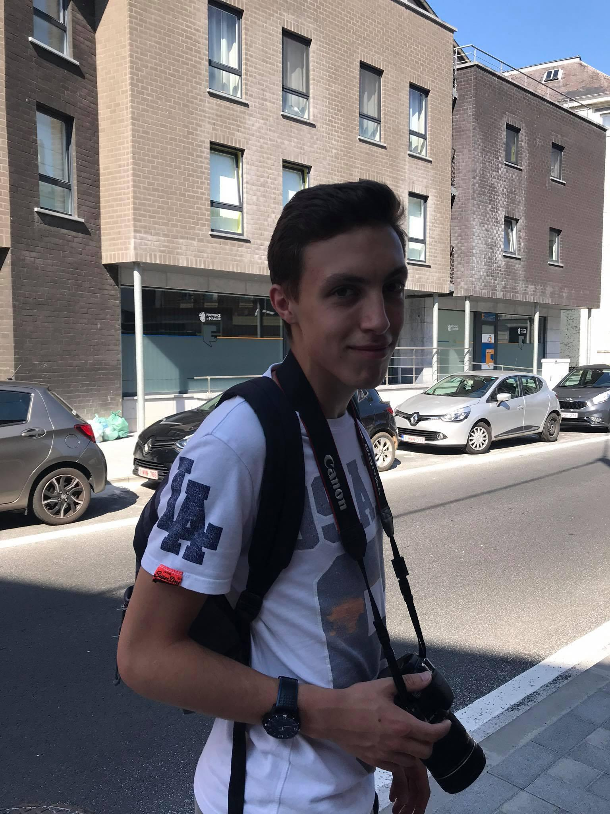

Kaplan Oruç
Student at the University of Brussels, Belgium
Master 1 student in Computer Science
Worked on orthogonal polygons and visibility theory sections. Created illustrations 2, 3 & 4.

Gailly Vincent
Student at the University of Brussels, Belgium
Master 1 student in Computer Science
Worked on ETR and Existential-R theory section, Chvatal theorem. Created illustrations 0 and 1.

Dudziak Thomas
Student at the University of Brussels, Belgium
Master 1 student in Computer Science
Worked on ETR, Existential-R, Fisk proof and irrational guards theory sections. Responsible for website creation and integration. Helped to the development of illustrations developed by Vincent & Oruç.